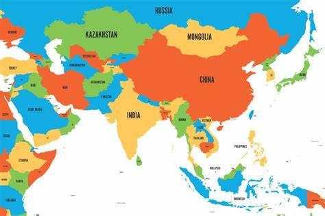

Best Advice
Asia is the Largest continent in the world with some of the most interesting and diverse culture. With a powerful history and being the birthplace of many large religions
Asia is definetley a place you want to see

First thing is to check the visa situation and keep track of your visa end date. These are very important for your safety when travelling to Asia. You need to make sure that
you have the visa required to go to that country you want to visit and make sure you remember when the Visa ends as in some countries Overstaying your Visa can be punishable with jail time.
You want to enter Asia with an open mind, Asia has a very diverse culture and unique experiences, Be open to try new foods, explore hidden gems and connecting with locals
You should also be cautious of scams, most people that you will find will be friendly but there are some scams targetting tourists.
You should respect local laws and customs. Research local customs, dress codes and etiquette, In some religious places you would find that you cannot wear very short clothing
and you will need some certain dress code.